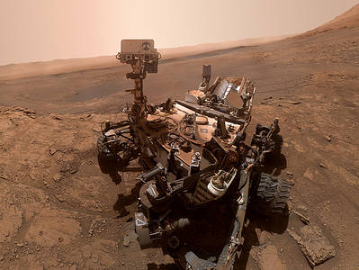

Mars is the fourth planet from the Sun and the second-smallest planet in the Solar System, being
larger than only Mercury. In English, Mars carries the name of the Roman god of war and
is often referred to as the "Red Planet".The latter refers to the effect of the iron oxide
prevalent on Mars's surface, which gives it a reddish appearance distinctive among the astronomical
bodies visible to the naked eye. Mars is a terrestrial planet with a thin atmosphere, with surface
features reminiscent of the impact craters of the Moon and the valleys, deserts and polar ice caps of Earth.
Curiosity Rover's Mission on Mars:
Curiosity is a car-sized rover designed to explore the Gale crater on Mars as part of NASA's Mars Science Laboratory (MSL) mission. Curiosity was launched from Cape Canaveral on November 26, 2011, at 15:02 UTC and landed on Aeolis Palus inside Gale on Mars on August 6, 2012, 05:17 UTC. The Bradbury Landing site was less than 2.4 km (1.5 mi) from the center of the rover's touchdown target after a 560 million km (350 million mi) journey. The rover's goals include an investigation of the Martian climate and geology; assessment of whether the selected field site inside Gale has ever offered environmental conditions favorable for microbial life, including investigation of the role of water; and planetary habitability studies in preparation for human exploration.